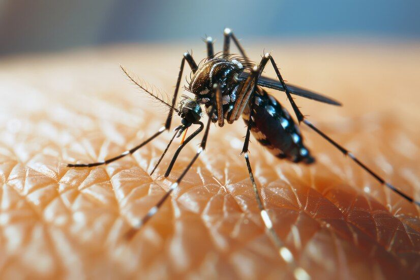
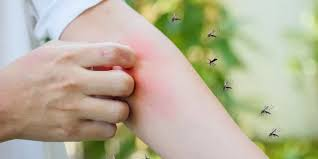

Casos de dengue aumentam no Brasil
O que é dengue?
A dengue é uma doença infecciosa causada por vírus e transmitida pela picada da fêmea do mosquito Aedes aegypti. Pode se apresentar de forma leve ou grave, exigindo atenção e prevenção constante.
Principais sintomas
Entre os sintomas mais comuns estão febre, dor de cabeça, dores no corpo e náuseas. Em situações mais graves, podem surgir manchas vermelhas, sangramentos, dor abdominal intensa e vômitos persistentes.
Importância da prevenção
Evitar água parada, usar repelente e manter os ambientes limpos são atitudes essenciais para reduzir a proliferação do mosquito.

Informações sobre Itatiba
Referencial Teórico
Dengue
Oque é: é uma doença infecciosa e febril, que pode se apresentar de forma benigna ou grave, dependendo de alguns fatores.
O vírus da dengue pertence a família dos flavivírus. Os quais são transmitidos pelo mosquito Aedes Aegypti.
Sintomas:
Os sintomas principais da dengue são febre, dor de cabeça, dores pelo corpo, náuseas ou até mesmo não apresentar qualquer sintoma. O aparecimento de manchas vermelhas na pele, sangramentos, dor abdominal intensa e contínua e vômitos persistentes podem indicar um sinal de alarme para dengue hemorrágica. Esse é um quadro grave que necessita de imediata atenção médica, pois pode ser fatal.
Como se transmite:
A doença é transmitida através da picada da fêmea do mosquito Aedes aegypti. Não há transmissão pelo contado com nenhum tipo de água ou alimento e nem com uma pessoa que está com o vírus da dengue.
Como se prevenir:
A melhor forma de se prevenir da dengue é acabar com o acumulo de agua parada, que é um lugar propicio para os mosquitos se reproduzirem, usar repelentes.
BRASIL. Virtual em saúde Ministério da Saúde. Dengue. Disponível em: https://bvsms.saude.gov.br/dengue-16/. Acesso em: 22 maio 2026.
A prefeitura de Itatiba junto com a secretaria de saúde, começou 2026 aumentando o combate a dengue, principalmente na época de chuvas e de muito calor. Trabalhando junto com departamento de vigilâncias estão em buscas de larvas para estudos com o intuito de combater a dengue.
Vacinação
Desde abril de 2024, Itatiba aplica a vacina contra a dengue. A vacina está disponível em todas as unidades de saúde, das 8h às 16h, primeiras e segundas doses, com intervalo de três meses. A atualização pode ser feita em qualquer posto de saúde, mediante apresentação dos documentos de identificação dos responsáveis e crianças e carteira de vacinação.
Esta vacina tem um papel importante no combate e prevenção e é indicada tanto para quem já teve dengue, quanto para quem nunca foi infectado. Contraindicada para quem tem alergia a algum dos componentes, quem tem o sistema imunológico comprometido ou alguma condição imunossupressora.
ITATIBA. Prefeitura Municipal. Itatiba inicia 2026 em busca de larvas no combate à dengue. Itatiba, 15 jan. 2026. Disponível em: https://itatiba.sp.gov.br/itatiba-inicia-2026-em-busca-de-larvas-no-combate-a-dengue#menu. Acesso em: 22 maio 2026.
Doenças sazonais
As doenças sazonais são aquelas que aparecem em determinadas épocas do ano e devido a mudança climáticas e condições ambientais, elas podem ser causadas por vírus, bactérias ou mesmo reações alérgicas, e entre elas as mais comuns são: gripes e resfriados, doenças respiratórias, viroses e doenças transmitidas por bactérias, vírus ou parasitas transmitidas por organismo vivo.
Com o aumento da chuva, médicos destacam que as doenças sazonais podem aumentar bruscamente, por isso a população deve ficar em estado de alerta e se prevenir corretamente.
As doenças sazonais representam um desafio para hospitais, upas, e pequenas unidades de saúde. Pois sobrecarregam muito, podendo ate prejudicar e causar prejuízos econômicos devido a ter que afastar os trabalhadores, e o gasto com tratamentos.
Referências
GOVERNO DE ALAGOAS. Médico do Hospital Ib Gatto Falcão explica o que são doenças sazonais e como evitá-las. Maceió, 3 abr. 2025. Disponível em: Saúde Alagoas. Acesso em: 22 maio 2026.